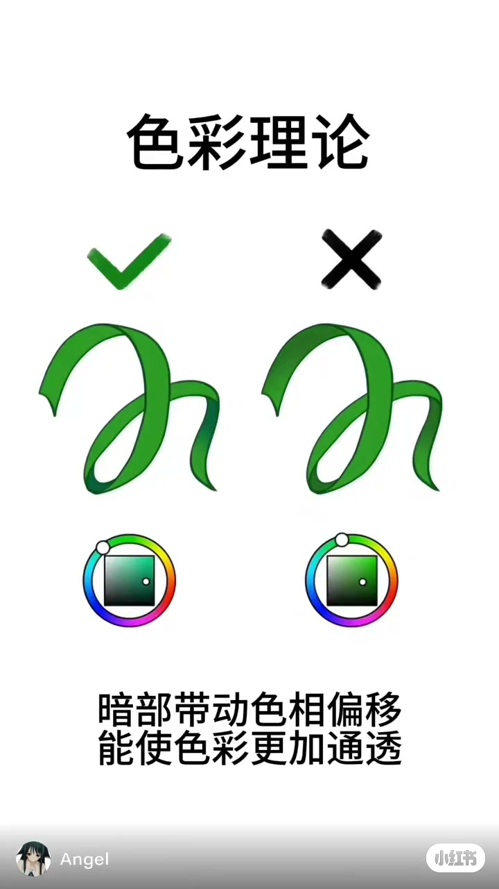
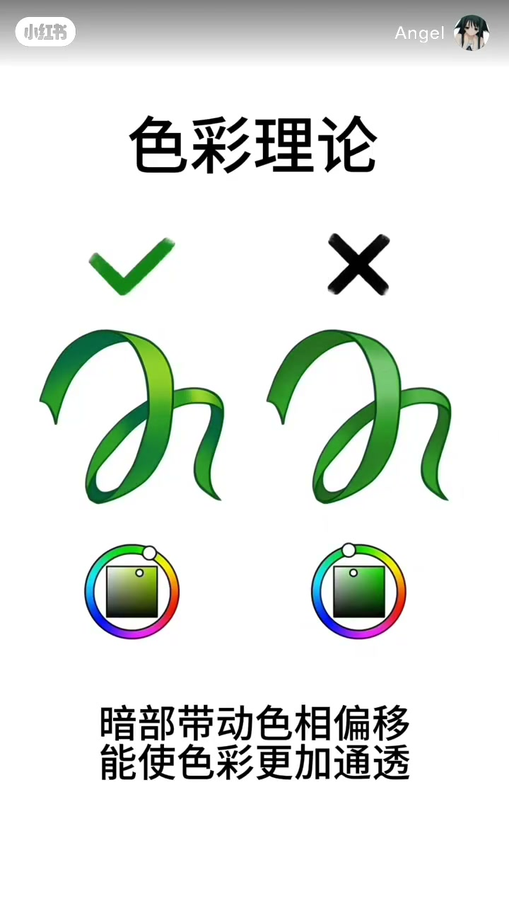

内容要点
这是一张停住的示意图，不是软件操作。作者名 Angel 以水印出现。视频没有交代画的是哪款软件，也没有给出色相偏移多少度。本篇只记这一条片子里实际画出来的绿丝带、色环和两行字。
知识结构
[00:00→00:04]
绿勾让暗部偏青
依画面，左侧丝带亮处是黄绿，暗处往青绿走。右侧黑叉下面的丝带暗处只是更深的绿，没有明显离开这个绿色。
[00:04→00:08]
底部把对照收成一句
构图不换。两行字写的是：暗部带动色相偏移，能使色彩更加通透。这是画面上的句子，不是口播。
总结
依画面，这条片子用同一条绿色丝带做对照：勾号一侧暗部偏青，叉号一侧只压暗。它没有给出可以照抄的数值。
00:00–00:04
绿勾偏青，黑叉只压暗
开头就是这张白底图，中间没有切到别的画面。顶部四个大字是「色彩理论」。中间左右各一条卷曲的绿色丝带，形状相近。左上方是一枚绿勾，右上方是一枚黑叉。
依画面，勾号一侧的亮处偏黄绿，折进去的暗处发青，能看出蓝。叉号一侧的亮处也是绿，暗处只是更暗、更灰的绿，色相没有明显走到青。丝带下面各放一枚取色示意：外圈是色环，中间是方框。勾号一侧的色环标记离开正绿、靠向青蓝，方框里的点斜着往暗处走。叉号一侧的色环标记停在绿色，方框里的点几乎竖直往下，只变明暗。
画面上没有标出软件名，也没有标出色相读数。上面关于偏青和只压暗的判断，来自这一帧能看见的颜色差别。

[00:01] 白底上左右对照：绿勾下的丝带暗部偏青，黑叉下的丝带只把绿色压暗。两边各有色环和方框。
Side-by-side on white: under the green check the ribbon shadows shift toward cyan, and under the black cross the ribbon only darkens the same green. Each side has a hue ring and a square.
00:04–00:08
同一张图停到片尾
大约四秒之后，丝带、勾叉和色环都还在原位。依画面，约五秒附近整帧亮度有一次轻微起伏，图形没有换成另一张。直到八秒结束，仍是这张对照。
底部两行黑字一直在：「暗部带动色相偏移」「能使色彩更加通透」。左下角是一枚头像和名字 Angel，右下角是小红书标记。视频没有再解释「通透」指饱和度、明度还是别的指标，这两行字就是画面给出的结论。

[00:06] 同一张图停到片尾。底部写着暗部带动色相偏移，能使色彩更加通透。左下角是 Angel。
The same graphic holds to the end. The bottom lines say a shadow-driven hue shift can make the color look clearer. Angel is at the lower left.